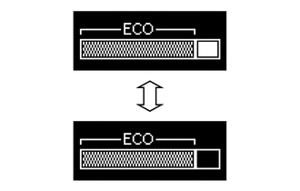

仪表/显示屏 仪表系统 详情 组合仪表
功能
蜂鸣器功能
下表列出了组合仪表总成中蜂鸣器的警告和提醒功能。
| 优先级别 | 项目 |
|---|---|
|
*1：带无级变速传动桥的车型 *2：带智能进入和起动系统的车型 *3：不带智能进入和起动系统的车型 *4：带点阵 LCD 式多信息显示屏的车型 *5：带滑动天窗系统的车型 |
|
| 1 | 换档杆位置 R 指示*1 |
| 2 | 前排座椅安全带警告（2 级） |
| 3 | 前排座椅安全带警告（1 级） |
| 4 | EPS 警告 |
| 5 | 智能进入和起动系统警告（持续）*2 |
| 6 | 智能进入和起动系统警告（间歇）*2 |
| 7 | 钥匙提醒*3 |
| 8 | 智能进入和起动系统警告（间歇、最多 9 次）*2 |
| 9 | 智能进入和起动系统警告（一次）*2 |
| 10 | 多信息显示屏警告*4 |
| 11 | 停机系统认证提醒 |
| 12 | 驻车制动啮合警告 |
| 13 | 行驶时车门未关警告 |
| 14 | 运动档拒绝警告*1 |
| 15 | 车灯提醒 |
| 16 | 滑动天窗警告*5 |
| 17 | 转向信号/危险警告操作 |
多信息显示屏
显示功能流程图
| 项目 | 显示切换条件 |
|---|---|
|
*：带 DISP 开关的车型 |
|
| *a | 未满足条件。 |
| *b | 满足条件。 |
| *c | 通过操作 DISP 开关按钮或方向盘衬垫开关总成的 DISP 开关，选择项目或显示。 |
| *d | 如果有多个显示请求，则将依次显示项目。 |
| *e | 将点火开关置于 OFF 位置后，里程表显示内容会持续一定的时间。 |
| 项目 | 显示切换条件 |
|---|---|
| *a | 未满足条件。 |
| *b | 满足条件。 |
| *c | 如果有多个显示请求，则将依次显示项目。 |
| *d | 通过操作方向盘衬垫开关总成，选择项目或显示。 |
| *e | 将点火开关置于 OFF 位置后，里程表显示内容会持续一定的时间。 |
巡航信息模式功能（带区段 LCD 式和单色点阵 LCD 式多信息显示屏的车型）
每次按下 ODO/TRIP DISP 开关按钮或方向盘衬垫开关总成* 的 DISP 开关时，区段 LCD 式多信息显示屏上的巡航信息按下列顺序显示。
*：带 DISP 开关的车型
| *a | 里程表 | *b | 短程里程表 A |
| *c | 短程里程表 B | *d | 平均油耗 |
| *e | 可连续行驶里程 | *f | 仪表板亮度调节 |
| *g | 尾灯点亮时。 | *h | 所示插图仅为示例。 |

|
短按 ODO/TRIP DISP 开关按钮或方向盘衬垫开关总成* 的 DISP 开关 | - | - |
*：带 DISP 开关的车型
每次按下 DISP 开关按钮或方向盘衬垫开关总成* 的 DISP 开关时，单色点阵 LCD 式多信息显示屏上的巡航信息按下列顺序显示。
*：带 DISP 开关的车型
| *A | 带环保驾驶指示区域显示的车型 | *B | 带环保驾驶指示区域显示的车型 |
| *a | 平均油耗/瞬时油耗 | *b | 可连续行驶里程 |
| *c | 发动机起动后的平均车速 | *d | 发动机起动后行驶的时间 |
| *e | 设定 | *f | 平均油耗/环保驾驶指示区域显示 |
| *g | 所示插图仅为示例。 | - | - |
|
|
短按 DISP 开关按钮或方向盘衬垫开关总成* 的 DISP 开关 | - | - |
*：带 DISP 开关的车型
显示标签操作（带彩色点阵 LCD 式多信息显示屏的车型）
可使用方向盘衬垫开关总成上的向右/向左开关切换当前显示的信息。
| *A | 带导航系统的车型 | - | - |
| *1 | 方向盘衬垫开关总成 | - | - |
| *a | 向左开关 | *b | 向右开关 |
| *c | 驾驶信息 | *d | 导航信息 |
| *e | 音响信息 | *f | 警告信息 |
| *g | 设定 | *h | 所示插图仅为示例。 |
|
|
向右开关操作 | 
|
向左开关操作 |
驾驶信息模式功能（带彩色点阵 LCD 式多信息显示屏的车型）
驾驶信息显示可连续行驶里程和油耗等车辆信息。
可使用方向盘衬垫开关总成上的向上/向下开关切换驾驶信息。
| *A | 带环保驾驶指示区域显示的车型 | - | - |
| *1 | 方向盘衬垫开关总成 | - | - |
| *a | 向上开关 | *b | 向下开关 |
| *c | 驾驶信息 1 | *d | 驾驶信息 2 |
| *e | 环保指示灯 | *f | 空白 |
| *g | 所示插图仅为示例。 | - | - |
|
|
向下开关操作 |
|
向上开关操作 |
定制功能
在带区段 LCD 式多信息显示屏的车型上，显示里程表时，按住 ODO/TRIP DISP 开关按钮或方向盘衬垫开关总成* 的 DISP 开关约 5 秒可将显示切换至环保驾驶指示灯定制显示。
*：带 DISP 开关的车型
|
|
按住 ODO/TRIP DISP 开关按钮或方向盘衬垫开关总成* 的 DISP 开关 |
|
短按 ODO/TRIP DISP 开关按钮或方向盘衬垫开关总成* 的 DISP 开关 |
*：带 DISP 开关的车型
在带单色点阵 LCD 式多信息显示屏的车型上，显示巡航信息的设定画面时，按住 DISP 开关按钮或方向盘衬垫开关总成*1 的 DISP 开关可将显示切换至油耗显示单位和环保驾驶指示灯*2 的定制画面。
*1：带 DISP 开关的车型
*2：带环保驾驶指示灯的车型
在设定模式中，可定制以下组合仪表总成项目。
| 项目 | 可用设定 |
|---|---|
|
*：带环保驾驶指示灯的车型 |
|
| 单位 | ·
km/L ·
L/100 km |
| 环保驾驶指示灯* | ·
ON ·
OFF |
在带彩色点阵 LCD 式多信息显示屏的车型上，可定制在多信息显示屏上显示的项目。
在设定标签中，可定制以下组合仪表总成项目。
| 项目 | 可用设定 |
|---|---|
|
*1：带环保驾驶指示区域显示的车型 *2：带导航系统的车型 |
|
| 环保驾驶指示灯*1 | 可将环保驾驶指示灯切换为：
·
ON（默认） ·
OFF |
| 顶部开关设定 | 可从下列项目中选择按下顶部开关时显示的项目：
·
驾驶信息 1 ·
驾驶信息 2 ·
环保驾驶指示区域显示*1 ·
导航信息*2 ·
音响信息*2 ·
警告信息 ·
设定 |
| 驾驶信息 1 | 可选择下列其中 2 项：
·
当前油耗（状态条显示）（默认显示在上部区域） ·
两次重置操作之间的总平均油耗（默认显示在下部区域） ·
发动机起动后的平均油耗 ·
加油后的平均油耗 ·
两次重置操作之间的总平均车速 ·
发动机起动后的平均车速 ·
两次重置操作之间经过的总时间 ·
发动机起动后经过的时间 ·
可连续行驶里程 ·
发动机起动后的可连续行驶里程 |
| 驾驶信息 2 | 可选择下列其中 2 项：
·
当前油耗（状态条显示） ·
两次重置操作之间的总平均油耗 ·
发动机起动后的平均油耗 ·
加油后的平均油耗 ·
两次重置操作之间的总平均车速（默认显示在下部区域） ·
发动机起动后的平均车速 ·
两次重置操作之间经过的总时间 ·
发动机起动后经过的时间 ·
可连续行驶里程（默认显示在上部区域） ·
发动机起动后的可连续行驶里程 |
| 中断显示 | 可将满足设定条件后出现的下列显示内容切换为 ON（默认）或 OFF。
·
逐向道路导航显示*2 ·
来电显示 |
| 基调色 | 可更改基调色：
·
天蓝色（默认） ·
蓝绿色 ·
深橙色 ·
亮橙色 |
| 初始化 | 可对设定项目进行初始化。 |
警告模式功能（点阵 LCD 式多信息显示屏）
需要发出警告时，警告显示中断多信息显示屏上的当前显示。
根据多信息显示屏显示项目的不同，主警告灯可能会点亮或闪烁，且组合仪表总成内的蜂鸣器可能会鸣响。
| 优先级别 | 显示 | 主警告灯 | 蜂鸣器 |
|---|---|---|---|
|
*1：带无级变速传动桥的车型 *2：带智能进入和起动系统的车型 *3：带巡航控制系统的车型 *4：带滑动天窗系统的车型 *5：带手动传动桥的车型 |
|||
| 1 | 车门未关警告（行驶时） | - | 鸣响 |
| 车门未关警告（停止时） | - | - | |
| 2 | 自动切断电源以节约蓄电池电量 | - | - |
| 3 | 切换至 P 位置*1、*2 | 闪烁 | 鸣响 |
| 4 | 松开驻车制动 | 闪烁 | 鸣响 |
| 未检测到钥匙*2 | 闪烁 | 鸣响 | |
| 5 | 检查上车和起动系统*2 | 闪烁 | 鸣响 |
| 检查巡航控制系统*3 | 点亮 | 鸣响 | |
| 高变速器油温*1 | 点亮 | 鸣响 | |
| 6 | 切断电源*2 | 闪烁 | 鸣响 |
| 在车内检测到钥匙*2 | 闪烁 | 鸣响 | |
| 熄灭车灯 | 闪烁 | 鸣响 | |
| 天窗打开*4 | 闪烁 | 鸣响 | |
| 踩下制动踏板，用钥匙触按发动机开关*1、*2 | 闪烁 | 鸣响 | |
| 踩下离合器踏板，用钥匙触按发动机开关*2、*5 | 闪烁 | 鸣响 | |
| 踩下制动踏板并按下发动机开关以起动*1、*2 | 闪烁 | 鸣响 | |
| 踩下离合器踏板并按下发动机开关以起动*2、*5 | 闪烁 | 鸣响 | |
| 切换至 P 位置以起动*1 | 闪烁 | 鸣响 | |
| 转向锁激活 | 闪烁 | 鸣响 | |
| 7 | 钥匙电池电量低*2 | 点亮 | 鸣响 |
| 8 | 电源打开*2 | - | - |
| 发动机起动准备状态*2 | - | - | |
工作情况
环保驾驶指示灯和环保驾驶指示区域显示
满足下列所有条件时，环保驾驶指示灯可工作：
点火开关置于 ON 位置且发动机正在运转。
车辆在换档杆未置于 P、R（倒档）或 N（空档）的情况下行驶。
车辆以 130 km/h (81 mph) 或更低的车速行驶。
下表所示为不同行驶状态下，环保驾驶指示灯和环保驾驶指示区域显示的操作：
| 行驶状态 | 环保驾驶指示灯 | 单色点阵 LCD 式多信息显示屏的环保驾驶指示区域显示 |
|---|---|---|
·
停车时 ·
满足下列任一条件时，操作停止： ·
换档杆置于 P、R（倒档）或 N（空档）。 ·
车辆以 130 km/h (81 mph) 或更高的车速行驶。 |
熄灭 | |
| 环保驾驶期间 | 点亮 | |
| 非环保驾驶期间 | 熄灭 |

|
| 行驶状态 | 环保驾驶指示灯 | 环保驾驶指示区域显示 |
|---|---|---|
| 停车时 | 熄灭 | |
| 环保驾驶期间 | 点亮 | |
| 非环保驾驶期间 | 熄灭 | |
| 满足下列任一条件时，操作停止：
·
点火开关置于 OFF 位置 ·
发动机停止 ·
换档杆置于 P、R（倒档）或 N（空档）。 ·
车辆以 130 km/h (81 mph) 或更高的车速行驶。 |
熄灭 |